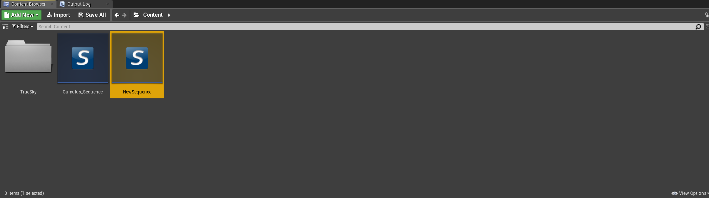
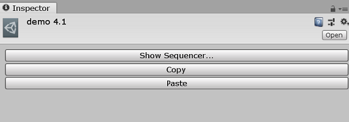

Sky Sequencer¶
The Sky Sequencer is the best way to alter the trueSKY environment. Using the sequencer, you can the different effects present in your scene in real time. This section is a brief tutorial of how the sequencer works.
Launching the Sequencer¶
UE4¶
To launch the Sequencer in UE4, simply double click on the sequence you would like to open. These can be found in the contents windows or from the details of the trueSKYSequenceActor if it is the currently active sequence. If you do not have a sequence, you can create one by right clicking in the content window, and selecting “Miscellaneous->New trueSKY Sequence Actor”.
Simply double click any of the sequences you want to open
Unity¶
To launch the sequencer within Unity, select the sequence you wish to launch. This can be found either in the projects window. Alternatively you can select your currently active sequence by clicking on the trueSKY object within the level hierachy. Once selected the active sequence can be found within the “trueSKY Sequence” dropdown. Clicking on the sequence here will take you directly to the active sequences location within the project window.
After clicking on a sequence, you can launch it with the buttons in the inspector
Before we look at the Sequencer, there are a some features of trueSKY you need to understand. Click here to return to logging into the sequencer.